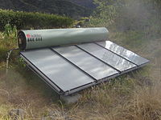

Preservare l'ambiente terrestre consiste nel rendere il consumo delle risorse prodotte dalla Terra più lento del tempo che essa impiega a produrle. Infatti la Terra, producendo tali risorse per noi e per gli altri esseri viventi in modo indefinito, non abbiamo garanzie su cosa accadrà in un futuro.
Questo libro contiene una serie di consigli pratici che ciascuno di noi può seguire per ridurre il consumo di risorse ed evitare la destabilizzazione dell'ecosistema terrestre. Il libro si interessa anche di dare una panoramica del mondo industrializzato e delle attitudini, dei comportamenti volti al consumo ad esso associati.
Non acquistare ciò che non ti occorre. Quando compri qualcosa, abbi l'accortezza di comprare oggetti che possano essere riusati o per lo meno riciclati.
Riusa: quando fai la spesa utilizza una borsa in tessuto anziché buste di plastica o di carta, in modo da poterla usare più volte. Oppure, semplicemente, riutilizza i sacchetti di plastica in più occasioni.
Ricicla: dona vecchio materiale, computer, vestiti, libri anziché buttarli. Il riciclaggio di componenti elettroniche prende anche il nome di trashware.
Il simbolo per i materiali riciclabili
Cura un giardino. Ogni nuova pianta che coltiverai, convertirà un po' di CO2(biossido di carbonio) in O
2(ossigeno).
Tutti gli appartamenti o i condomini hanno spazio per almeno una pianta. Ogni appezzamento di terra o strada ha
lo spazio per almeno un albero. Quando è possibile, innaffia le piante con acqua riciclata. L'acqua con cui
sciacqui i piatti è perfetta.
Rimpiazza i prati con altre forme di sottobosco. I prati richiedono molta acqua e tendono a non condividere
l'acqua né con le piante vicine né con l'erba vicina.
La prossima volta che devi sostituire una lampadina, usa una lampadina fluorescente, invece di una a
incandescenza. Una lampadina fluorescente da 12 W dà tanta luce quanta ne darebbe una lampadina a
incandescenza da 60W; poiché quest'ultima converte solamente il 10% dell'energia che le viene data in luce, e la
restante energia viene dispersa sotto forma di calore.
Ovviamente non per questo se si scelgono lampadine a fluorescenza la stanza sarà più fresca.
Lampada fluorescente a risparmio energetico
Usa prodotto con certificazione TCO e altre simili etichette come Energy Star. Usa le batterie ricaricabili. Questo riduce il numero di batterie esaurite da dover buttare, e pertanto usando le batterie ricaricabili si riduce la quantità di agenti chimici nocivi nelle zone in cui vengono interrati i rifiuti. Spegni gli elettrodomestici che non usi. Non lasciarli in stand-by. Puoi riconoscere quando un elettrodomestico è in stand-by dal fatto che è accesa una piccola luce (in genere, un LED). In questo caso, premi il pulsante di spegnimento, se c'è.
Pannello solare termico